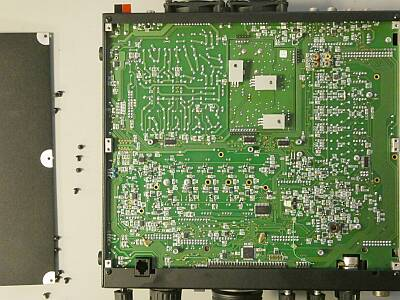 |
下蓋を外して全体を写してみました
メイン基板は、１枚です |
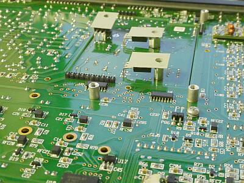 |
下蓋を外し、メイン基板の一部です
放熱が必要な素子についてはスペーサーを使って上手に下蓋に止めて放熱できるようにしてあります |
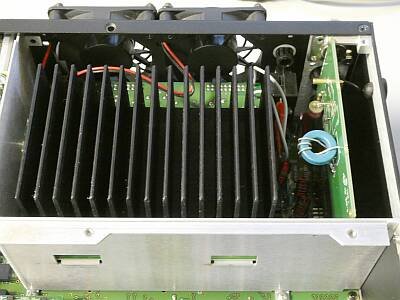 |
上蓋を外し、ファイナル部を写しました |
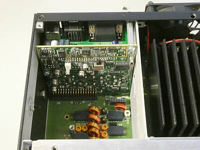 |
外部Ｉ／Ｆ部です |
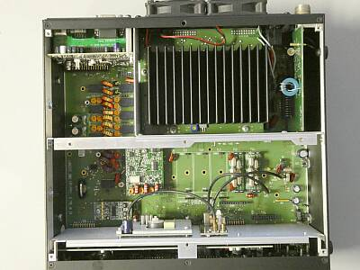 |
上蓋を取って、真上から写してみました
昔の無線機では考えられない部品構成です
送信機を思わせるのは、ファイナルのヒートシンクと冷却ファンくらい |
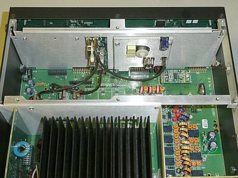 |
リア・パネル側からフロント裏を写しました
ファイナル・アンプ部の右は、ＢＰＦ部です |
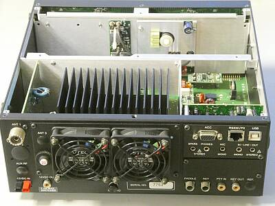 |
少し引いて、リアパネルを含め写してみました |
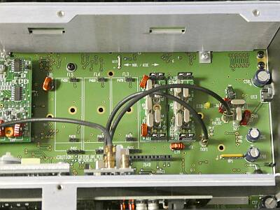 |
クリスタル・フィルタ
本機では、５ポール ２．７ＫＨｚ幅と、５００Ｈｚ幅
の２個が、取り付けられています
合計５個まで実装できるスペースが用意されています |
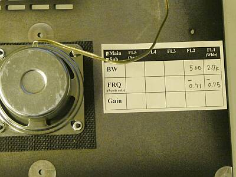 |
写真は、上蓋の裏です
内臓されたフィルタの情報がメモされています
同じ情報が、フィルタ本体にも記されています
想像ですがフィルタのセンター周波数のズレか？
アプリケーションで補正が行われているのではないかと
スピーカーは、ご覧のように大きなマグネットのものが採用されています |
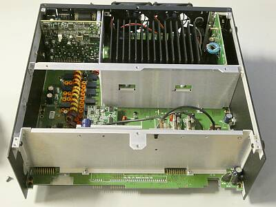 |
フロントパネルを取り外した本体
フロントパネルとの接続は、コネクタのみ
全体的に見ても、ケーブルでの配線と言うのは限定的です
Ｋｉｔとしての販売もありますから、この辺りは意識してあると思われます
ケース（筐体）の構造にあっても、そのことがうかがえます |
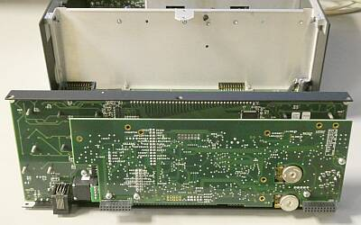 |
フロントパネルの裏面
２枚の基板で構成されています |
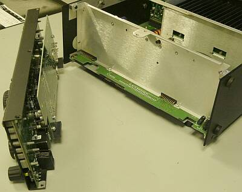 |
フロントパネルは、このよう取り外すことができます
Ｋｉｔも、調整済の基板が用意されていて、あとは組立だけというＫｉｔですから、構造も組み立てやすい形が採用されます（ワイヤー配線がない） |
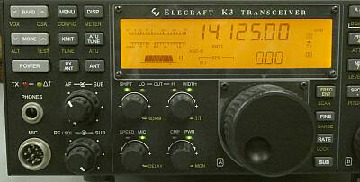 |
これだけの液晶パネル面積で、多くの情報を表示します
ＶＦＯ「Ｂ」ツマミもファンクション切り替えとして動作します |
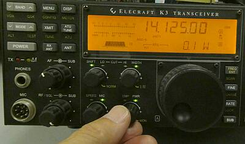 |
送信出力については、結構正確にコントロールされています
１２Ｗまでは、０．１Ｗ単位
それ以上は、１Ｗ単位で１１０Ｗまで設定できます
１０Wのモデルに、１００Wのアンプを追加との様子が想像できます |
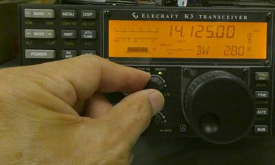 |
ＤＳＰ処理
これがなかなか良くできていて、シフトにおける中心周波数の調整と、パス・バンド幅の調整が単独で行うことができます
ノイズや混信の中で、微調して聞き取りやすい条件を探し出すことで、悪条件下で明瞭度を上げることができます
個人的には、とても気に入っています |
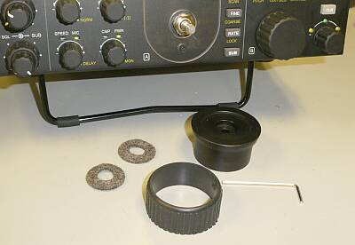 |
デジタル技術を駆使した本機ですが、メイン・ダイヤルの回転させる重さの調整は、アナログのまま・・・原始的と言っても良いでしょう、フェルト２枚を挟んで、あとはツマミの取り付け位置によって重さを加減します |
|
最近の上位機種というものを手にしたことがないので、これらとの比較はできません
本機より、はるかに優れた能力を発揮するものがあるのかもしれません（きっとあるでしょう）
ＤＳＰ処理の登場により、これまでのアナログ処理（コリンズ７５Ａ-４以降のＢＦＯとＶＦＯを同時にシフトする手法、あるいは２つのフィルタを見かけ上重ねて使って行う手法）によるＩＦシフト、パス・バンド・チューニングとは、一線を引く混信除去対応が出来るようになりました
本機が登場した頃、すでにＩＣ-７５６ＰＲＯⅢやＴＳ-９５０ＳＤＸなど、ＤＳＰ処理を使った無線機は登場していたわけですが、この時点で他社で採用されていたＤＳＰ処理にと比べても、その処理技術が、一歩先んじているように思います
非常にＳ/Ｎ良く受信できます
この点は、ＡＧＣをうまく使っている気もします
混信除去については、先に記したようにオーディオ段のデジタル処理で、アナログ手法の同等の処理結果とは、全く別物に感じますし、例えばＩＣ-７５６ＰＲＯⅢと並べていろんな条件で試してみましたが、明らかに本機のほうが了解度の向上度合いが大きい結果が多いです
昨今の無線機は、ＤＳＰ処理を通り過ぎてＳＤＲとまで進化していますので、ここで感動していることはフツー、当たり前のことになっているのかもしれません
そうであっても、小型・軽量という点においては、本機の優位性は高いでしょう |